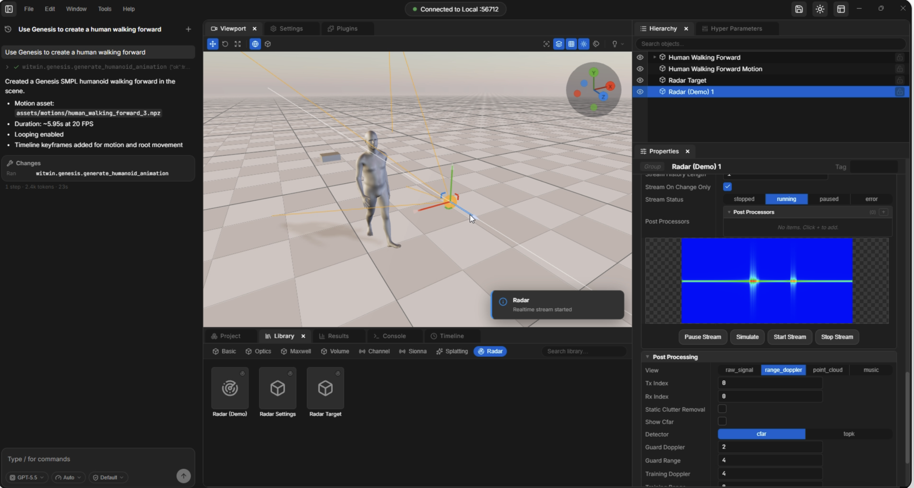

Differentiable Radio Frequency Digital Twin
ACM MobiCom 2026 · Demo Track · forthcoming
Simulation · sensing · machine learning
Master’s · UC San Diego
I’m interested in physically based simulation, synthetic data generation, and machine learning for real-world sensing.

Projects

Physics-based simulation and controllable motion generation for labeled radar data across subjects, activities, and environments.

An interactive 3D workspace for scene authoring, motion matching, animation timelines, and simulation preparation.

Evidence-backed faculty profiles, monthly research digests, and collaboration discovery for more than 20 faculty members.
Research output
ACM MobiCom 2026 · Demo Track · forthcoming
Amazon Hardware Organization Academic Innovation Partnership Poster Event · Oct 2026
CWC Annual Research Review · UC San Diego · Oct 2026
CSE Undergraduate Research Symposium · University of Michigan · Apr 2025
Experience
Jan 2026 — Present
UC San Diego · ECE
Develop physics-based radar data synthesis and research software with Prof. Xinyu Zhang.
Jun 2026 — Present
UC San Diego · Center for Wireless Communications
Build research information tools and support CWC’s web presence, communications, and community activities.
Contact